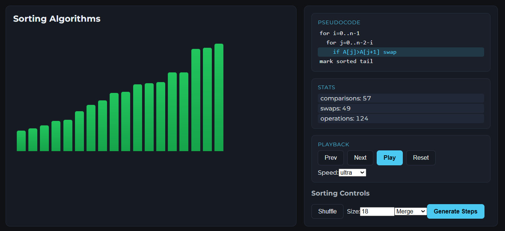
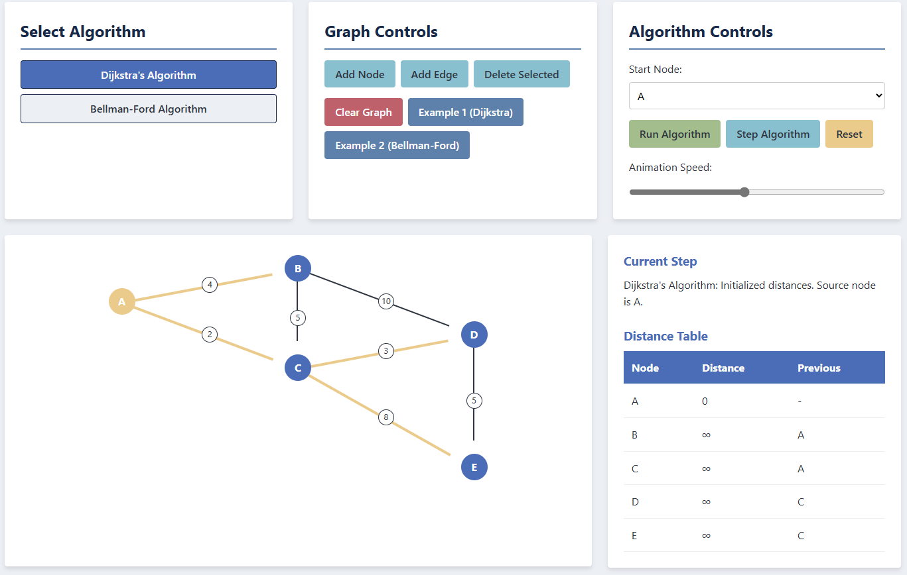
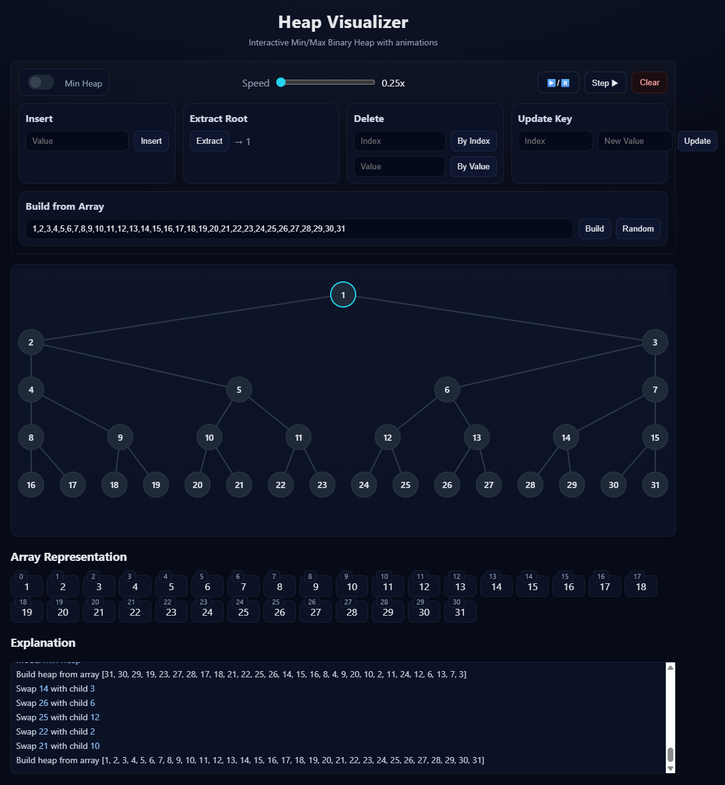
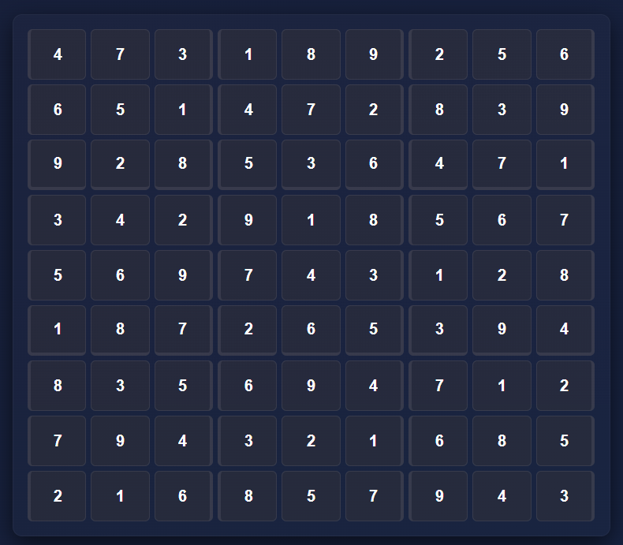
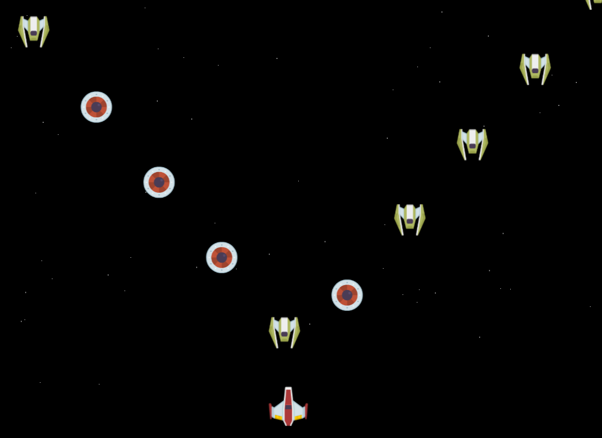
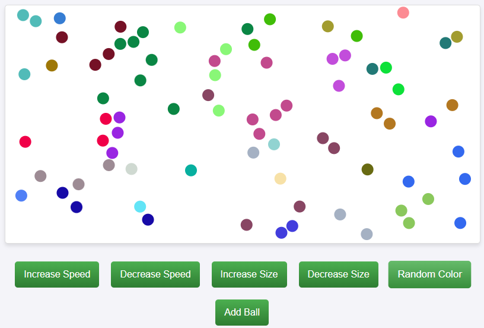
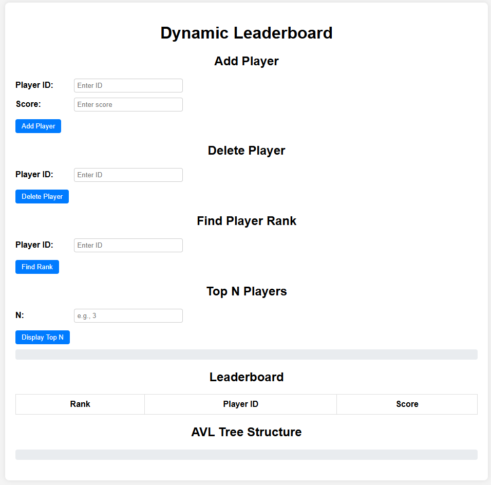
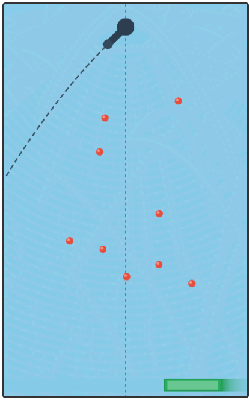

Project inventory
Working software, with status included.
Maintained tools appear alongside research prototypes and older experiments, but they are not presented as equivalent. Each status reflects what the repository can support today.

Data Structures Learning Lab
Structure-specific visualizations, operations, pseudocode, counters, and educational reference material.

Graph Algorithms Workspace
Build weighted graphs, edit them directly, and inspect Dijkstra or Bellman–Ford step by step.

Binary Heap Explorer
Min/max heap operations with coordinated tree and array representations, operation logging, and playback.

Sudoku Constraint Solver
Playable puzzles plus an optional developer view for propagation, MRV selection, and backtracking.
Partitioning Problem Playground
Compare exact, decision, and greedy approaches while inspecting balance and exponential workload growth.

Space Rangers
Canvas arcade project demonstrating object-oriented game entities, input handling, animation, and local scores.

Ball Pit
Canvas physics playground with controllable speed, radius, color, and particle count.

AVL Leaderboard
Leaderboard operations backed by an AVL tree, with a visible tree representation.

Pegish
Canvas pinball-style project with keyboard, pointer, touch, theme, and language controls.
External repositories
Additional public work
Research and applied projects that require separate runtimes or data remain linked from the research page instead of being simulated here.